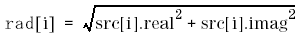
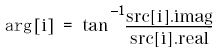
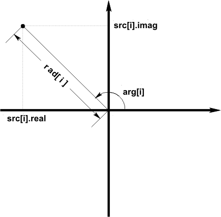

DSP_RECT_POL
This API converts rectangular coordinate data to polar coordinate data according to the following equations:


Where, -pi<= arg[i] <=pi.
The following figure shows each parameter for the conversion:

This API is defined in the header file /opt/hp93000/soc/prod_com/include/MAPI/libdsp.h.
Syntax
DSP_RECT_POL(ARRAY_COMPLEX& src, ARRAY_D& rad, ARRAY_D& arg); DSP_RECT_POL(COMPLEX *src, DOUBLE *rad, DOUBLE *arg, INT size);
I/O |
Parameter |
Description / Range |
|---|---|---|
I |
src |
Source array, which contains the rectangular coordinate data |
O |
rad |
Result array in which to store the radius data |
O |
arg |
Result array in which to store the angle data Unit: radian |
I |
size |
Number of elements to be processed 1 ≤ size ≤ 2097152 size ≤ (size of src) size ≤ (size of rad) size ≤ (size of arg) |
Example
COMPLEX source[256];
DOUBLE phase[256], amplitude[256];
.
.
DSP_RECT_POL(source, amplitude, phase, 128);
DSP_RECT_POL converts the first 128 elements ofsourcefrom rectangular coordinate data to polar coordinate data, then returns the length data and angle data toamplitudeandphase.